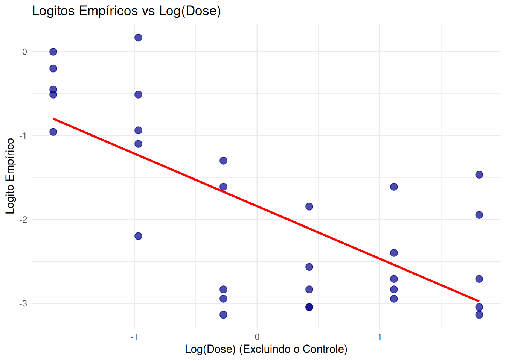
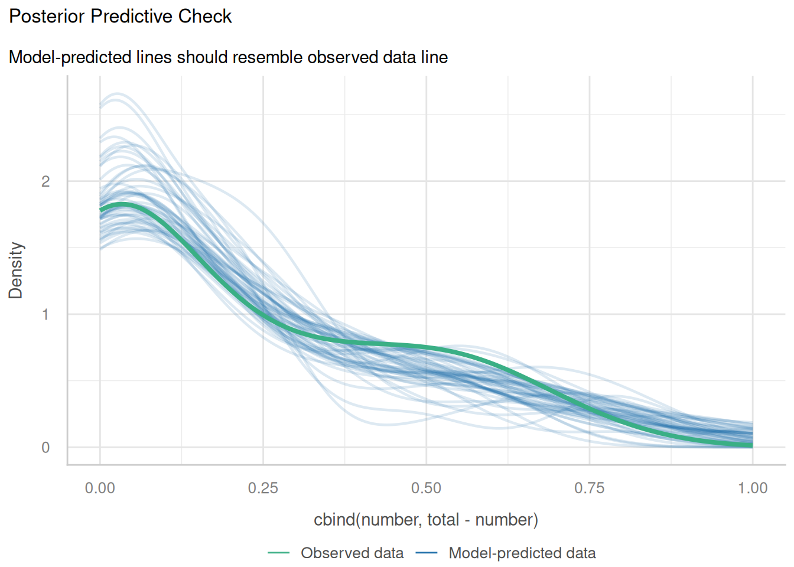
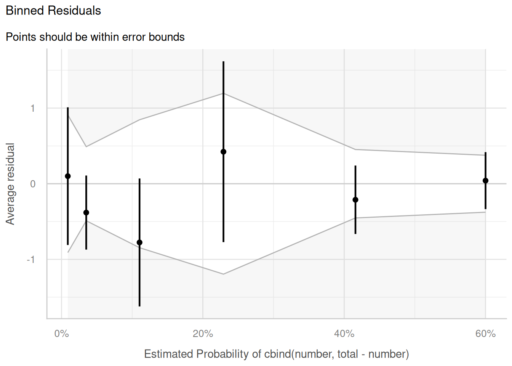
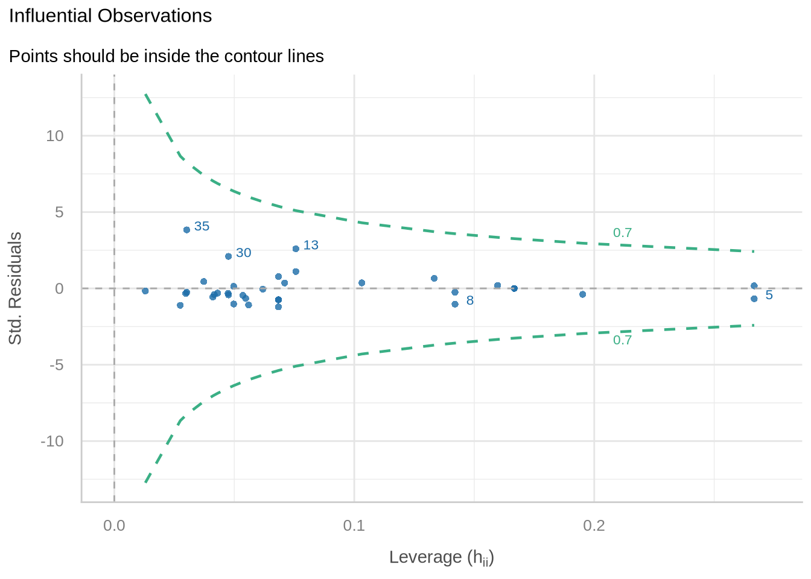
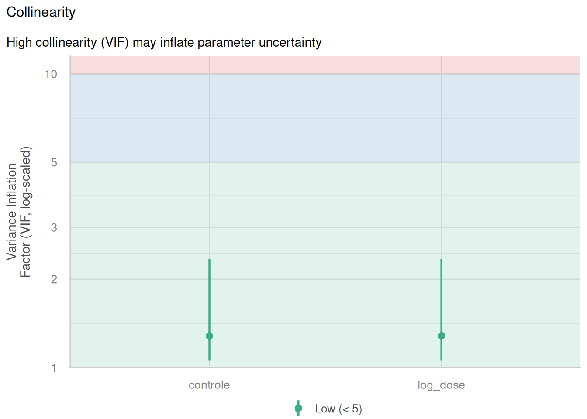
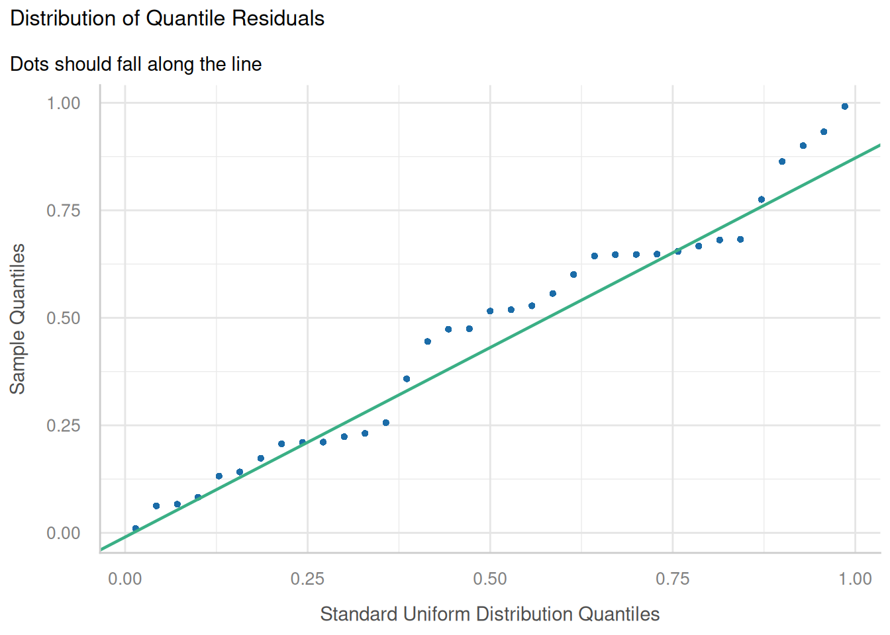

mod_cloglog <- glm(cbind(number, total - number) ~ dose,
family = binomial(link = "cloglog"), data = earthworms)
modelo_logit1 <- glm(cbind(number, total - number) ~ log(dose + 1),
data = earthworms, family = binomial(link = "logit"))
modelo_logit2 <- glm(cbind(number, total - number) ~ log(dose + 0.1),
data = earthworms, family = binomial(link = "logit"))
mod_logit <- glm(cbind(number, total - number) ~ dose,
family = binomial(link = "logit"), data = earthworms)
dados$controle <- ifelse(dados$dose == 0, 1, 0)
dados$log_dose <- ifelse(dados$dose > 0, log(dados$dose), 0)
mod_glm_dummy <- glm(cbind(number, total - number) ~ controle + log_dose,
data = dados,
family = binomial(link = "logit"))Modelo de Dose-Resposta
Trabalho Final da disciplina de Modelos Lineares Generalizados
1 Introdução
A ecotoxicologia depende fortemente de ensaios de dose e resposta para compreender o impacto de substâncias químicas em organismos vivos. Nesses experimentos, busca-se quantificar como a variação na dose (ou concentração) de um estressor químico influencia uma resposta biológica de interesse. Um indicador comportamental comum para avaliar o estresse ambiental em ecossistemas terrestres é a taxa de migração ou fuga de espécies bioindicadoras, como as minhocas, quando expostas a solos contaminados.
1.1 Descrição e Origem do Conjunto de Dados
Este trabalho utiliza o conjunto de dados empíricos earthworms, disponibilizado no pacote drc do ambiente computacional R. Os dados originalmente fornecidos por Nina Cedergree (Universidade de Copenhague), consistem em 35 observações provenientes de um teste de toxicidade. O experimento documenta o número de minhocas que permaneceram em um recipiente contaminado com doses variadas de uma substância tóxica não revelada, ou seja, a quantidade de indivíduos que falhou em migrar para um recipiente vizinho limpo e não contaminado.
1.2 Justificativa
Como o fenômeno estudado avalia a ação individual das minhocas (migrar ou não), mas os dados disponíveis registram a proporção desse comportamento por amostra (o número de indivpiduos que permaneceram no solo contaminado em relação ao total exposto a cada dose), trata-se de uma variável resposta de dados agrupados. Essa estrutura empírica motiva a aplicação da teoria de MLG sob a suposição de uma distribuição binomial, oque permite modelar adequadamente a probabilidade de um indivíduo permanecer no recipiente contaminado em função da dose recebida.
2 Metodologia
2.1 Variáveis e Distribuição
A amostra do estudo consiste em 35 observações empíricas. A variável resposta é a proporção de minhocas retidas no solo contaminado em cada ensaio, estruturada e modelada como dados agrupados sob a suposição de uma distribuição binomial, \(Y_i \sim Binomial(n_i, p_i)\). A proporção média esperada é \(E(Y_i/n_i) = p_i\), assumindo a componente de variância teórica \(Var(Y_i/n_i) = \frac{p_i(1 - p_i)}{n_i}\).
Para conectar a probabilidade \(p_i\) ao preditor linear \(\eta_i\), serão ajustadas e comparadas duas funções de ligação para dados binomiais:
- Logito: \(\eta_i = \log\left(\frac{p_i}{1-p_i}\right)\)
- Complemento Log-Log (Cloglog): \(\eta_i = \log(-\log(1 - p_i))\)
Na componente sistemática, o tratamento da dose zero (grupo controle) exige adaptação matemática, visto que \(\log(0)\) é indefinido. Na ausência de estímulo tóxico, a locação espacial dos organismos assume uma distribuição equiprovável, estabelecendo uma probabilidade basal esperada de retenção próxima a \(p=0,5\). Essa descontinuidade conceitual e matemática inviabiliza o ajuste de uma regressão ordinária diretamente em função de \(\log(Dose)\). Para contornar esta limitação e avaliar a sensibilidade do modelo, serão testadas duas abordagens estruturais:
- Deslocamento escalar: Adição de constantes arbitrárias à variável explicativa para viabilizar a transformação logarítmica em todo o conjunto de dados, testando os preditores \(\log(Dose + 1)\) e \(\log(Dose + 0,1)\).
- Variável indicadora (Dummy): Formulação do modelo em segmentos, isolando o efeito do controle das doses ativas por meio da equação:
\[ \eta_i = \beta_0 + \beta_1I_{\text{controle}} + \beta_2\log(\text{Dose}_{\text{ativa}})\]
A estimação dos parâmetros será feita pelo método da Máxima Verossimilhança. A seleção do melhor modelo basear-se-á no Critério de Informação de Akaike (AIC), em conjunto com métricas complementares de poder preditivo e explicativo, como Pseudo-\(R^2\) de MacFadden e a Raiz do Erro Quadrático Médio (RMSE). Adicionalmente, a contribuição e significância de cada variável explicativa na componente sistemática será testada através de uma Análise de Desvio (tabela ANOVA) fundamentada na distribuição Qui-Quadrado.
2.2 Modelos Competitivos e Transformação de Variáveis
Para a seleção dos modelos, será apresentado o processo de ajuste, seleção e validação dos Modelos Lineares Generalizados (MLG) aplicados aos dados de dose-resposta com minhocas. Primeiramente, serão ajustados e comparados diferentes modelos, abordando as funções de ligação logito e complemento log-log (cloglog), e devido à natureza dos dados, algumas alterações nestes modelos para validade matemática. Essa escolha e comparação dos modelos tem como base critérios de qualidade global e ajuste, especificamente o Critério de Informação de Akaike (AIC), o Desvio (Deviance), o Pseudo-\(R^2\) de McFadden, a Raiz do Erro Quadrático Médio (RMSE) e a métrica dose efetiva mediana (DE50).
Inicialmente, iremos ajustar os seguintes cinco modelos.
Que são, respectivamente:
Modelo Linear Generalizado Binomial com Ligação Complemento Log-Log;
Modelo Linear Generalizado Binomial com Ligação Logito e variável resposta modificada (log + 1);
Modelo Linear Generalizado Binomial com Ligação Logito e variável resposta modificada (log + 0.1);
Modelo Linear Generalizado Binomial com Ligação Logito padrão;
Modelo Linear Generalizado Binomial com Ligação Logito e variáveis resposta modificadas (adição de variável e modificação);
As variáveis resposta foram modificadas para o logarítmo da dose pois, na biologia, a resposta de um organismo à uma substância quase nunca é linear, o efeito costuma ser em magnitudes (escala logarítmica).
Portanto, se for usado a dose normalmente, o modelo vai dar um peso maior para as doses mais altas, ignorando o que acontece nas doses mais baixas. O log resolve isso espalhando as doses menores e aproximando as maiores, sendo o ideal para o ajuste logistico.
Entretanto, apenas aplicar o logaritmo não seria o suficiente pois, nesta variável explicativa, há a presença de zeros, para contornar isso, foi-se adicionado uma constante ao valor da variável, para um caso foi usado o log(dose + 1) e então para minimizar a contribuição da constante foi-se usado o log(dose + 0.1), entretanto, essa abordagem gera uma distorção na escala das doses, afetando possíveis estimativas e o cálculo de métricas como a dose efetiva mediana (DE50).
Dessa forma, também para contornar este problema foi-se ajustado um modelo com a adição de uma variável “dummy”, isto é, a variável indica se o valor da dose é zero, se for, não aplica o logaritmo, se não for, aplica o logaritmo, ao mesmo tempo evitando que seja feito log(0) e aplicando o logaritmo importante para o modelo.
2.3 Funções de Ligação e Cálculo da \(DE_{50}\)
Agora iremos fazer uma análise da métrica DE50 e seus intervalos de confiança.
A dose efetiva mediana (DE50) é a dose de uma substância que produz um efeito específico em exatamente 50% dos indivíduos testados. Para o nosso contexto, a DE50 é a dosagem exata do contaminante necessária para fazer com que 50% das minhocas migrem.
A definição da DE50 difere para cada função de ligação do modelo. Como aqui estamos tratando modelos com ligação complemento log-log e logito, podemos definir a DE50 como, para o modelo com ligação complemento log-log:
Seja a função de ligação complemento log-log expressa por:
\[\text{cloglog}(p) = log(-log(1 - p)) = \beta_0 + \beta_1 \cdot X\]
Para definirmos a DE50, substitui-se a probabilidade \(p\) por 0,5, tendo:
\[log(-log(1 - 0.5)) = log(-log(0.5))\]
Resolvendo, chegamos à conclusão que:
\[\beta_0 + \beta_1 \cdot X_{50} = - 0.3665\]
Isolando o \(X_{50}\) que representa a DE50, chegamos na conclusão que:
\[DE_{50} = X_{50} = {-0.3665 - \beta_0 \over \beta_1}\]
Já para o modelo com ligação logito, temos que:
Seja a função de ligação logito expressa por:
\[\text{logit}(p) = log\left(\frac{p}{1-p}\right) = \beta_0 + \beta_1 \cdot X\]
Substituindo a probabilidade \(p\) por 0,5, temos:
\[log\left(\frac{0.5}{1-0.5}\right) = log(1) = 0\]
Resolvendo, chegamos à conclusão que:
\[\beta_0 + \beta_1 \cdot X_{50} = 0 \Rightarrow DE_{50} = X_{50} = -\frac{\beta_0}{\beta_1}\]
Nos casos em que a transformação logarítmica foi aplicada à variável explicativa, o valor isolado deve ser convertido de volta à escala original usando a função exponencial. Para o modelo com função de ligação Logito e variável indicadora (Dummy), a análise concentra-se nas amostras submetidas à substáncia ativa(\(I_ {\text{controle}} = 0\)). A função de ligação é reduzida a:
\[\log\left(\frac{p}{1-p}\right) = \beta_0 + \beta_2\log(\text{Dose}_{\text{ativa}})\]
Substituindo a probabilidade \(p\) por 0,5:
\[\log\left(\frac{0,5}{0,5}\right) = \log(0) = 0\]
\[0 = \beta_0 + \beta_2\log(\text{Dose}_{\text{ativa}})\]
Isolando a dose de interesse e convertendo de volta à escala original via função exponencial, obtém-se:
\[DE_{50} = \exp\left(-\frac{\beta_0}{\beta_2}\right)\]
2.4 Críterios de Seleção e Diagnóstico
Iremos utilizar 4 critérios para selecionar o modelo ideal:
Critério de Informação de Akaike (AIC): quanto menor, melhor;
Desvio (Deviance): quanto menor, melhor;
Pseudo-\(R^2\) de McFadden: quanto maior, melhor;
Raiz do Erro Quadrático Médio (RMSE): quanto menor, melhor.
Além destes, há também uma métrica que pode servir como critério, sendo ele a dose efetiva mediana (DE50), neste, iremos observar se o valor é condizente com o contexto, nesse caso, qualquer modelo que apresentar em seu intervalo de confiança valores negativos pode ser considerado inconsistente e descartado, a inconsistência vem de que não existe dose negativa, portanto valores negativos de dose efetiva mediana são inconsistentes.
3 Análise Descritiva
Exploração visual inicial das variáveis explicativas e comportamento empírico da resposta.

No gráfico podemos observar que na dose zero (controle) cerca da metadade das minhocas naturalmente permanece no recipiente. A queda abrupta com o aumento da dose comprova que uma simples transformação logarítmica direta da covariável é inadequada, reforçando a necessidade de isolar o grupo controle na modelagem.

Excluindo-se o controle e plotando a resposta contra o logaritmo das doses ativas, observamos uma forma sigmoide descrescente. Esse padrão justifica o uso do logaritmo da dose como variável explicativa para as doses ativas.

O uso de logitos empíricos plotados contra o logaritmo da dose mostra uma notável tendência linear. A obtenção dessa linearidade é o diagnóstico visual perfeito de que a função de ligação logistica (Logito) está corretamente especificada para a componente sistemática do modelo.
4 Ajuste e Diagnóstico do Modelo
Com os modelos definidos, podemos seguir para a comparação e seleção deles.
Iniciaremos pela comparação dos AICs:
df AIC
mod_cloglog 2 91.81223
modelo_logit1 2 80.56107
modelo_logit2 2 77.91139
mod_logit 2 94.19802
mod_glm_dummy 3 78.33592Para o AIC percebe-se que o modelo logito padrão, complemento log-log e o modelo logito deslocado à 1 unidade apresentam os maiores AICs, o que não é ideal, já aqui pode-se descartar os modelos logito padrão e logito deslocado à 1 unidade, o modelo complemento log-log apesar de apresentar um AIC alto comparado aos outros não será descartado a fins de comparação de ligações posteriores.
| Modelo | Desvio Residual |
|---|---|
| Complemento Log-Log | 44.0193 |
| Logito com log(dose + 0.1) | 30.1185 |
| Logito com dummy | 28.5430 |
Para a comparação dos desvios dos modelos restantes percebe-se novamente que o modelo complemento log-log apresenta as piores métricas, tendo o maior desvio com uma diferença considerável, enquanto os modelos logito restantes tem uma diferença mínima entre eles.
| Modelo | R2 de McFadden |
|---|---|
| Complemento Log-Log | 0.5474 |
| Logito com log(dose + 0.1) | 0.6903 |
| Logito com dummy | 0.7065 |
No pseudo-\(R^2\) temos mais uma vez uma diferença grande entre o complemento log-log e os logitos, enquanto os logitos, entre si, tem uma diferença marginal. Além disso, no geral podemos afirmar que para qualquer um dos modelos, temos valores ótimos de R², evidenciando a qualidade dos modelos.
| Modelo | RMSE |
|---|---|
| Complemento Log-Log | 0.1238 |
| Logito com log(dose + 0.1) | 0.1008 |
| Logito com dummy | 0.0968 |
Já na Raiz do Erro Quadrático Médio (RMSE) temos diferenças marginais entre os modelos, no geral temos bons erros, isto é, mantendo seus valores bem baixos.
DE50 (cloglog): -0.1067457 [95% IC: -0.3984615 ; 0.1849701 ]DE50 (logit2): 0.07321785 [95% IC: 0.01983951 ; 0.1503717 ]DE50 (Dummy): 0.1451175 [95% IC: 0.08828153 ; 0.2385447 ]Agora analisando as estimativas do \(DE_{50}\), a primeira coisa que pode-se notar é que o modelo com função de ligação complemento log-log resultou em estimativas negativas (tanto a pontual quanto no intervalo de confiança), o que é inconsistente, uma vez que afirma que a dose que afeta exatamente metade dos indivíduos seria uma dose negativa, o que não existe. Permitindo assim que o modelo seja considerado inconsistente e propriamente descartado.
Além disso, os outros dois modelos resultaram em intervalos de confiança consistentes (tudo positivo), portanto, podem ser considerados como válidos.
Entretanto, agora com todas as métricas de comparação apresentadas, iremos prosseguir apenas com o modelo que mais se destacou, isso é, o modelo que apresentou as melhores métricas, mas não só isso, melhor interpretabilidade, portanto, o modelo escolhido será o Modelo Linear Generalizado Binomial com Função de Ligação Logito e Variável Dummy. Pois esse modelo não só apresentou as melhores métricas, como também deve apresentar interpretações bem mais fáceis de se fazer, uma vez que a sua variável explicativa não houve deslocamento como o outro modelo.
4.1 Qualidade de Ajuste
Com o modelo selecionado, iremos verificar a bondade do ajuste pelo desvio (Deviance Goodness-of-Fit), que compara o erro do modelo contra um modelo perfeito (saturado). Podemos tirar conclusão disso a partir de um p-valor, onde quanto maior esse p-valor, melhor está ajustado o modelo.
P-valor da Bondade de Ajuste (Desvio): 0.6422658 O p-valor resultante é bem alto, confirmando assim que o modelo está bem ajustado aos dados.
4.2 Análise de Resíduos
Para confirmar que o nosso modelo está bem ajustado aos dados, iremos verificar os pressupostos de homogeneiedade, pontos influentes, colinearidade e distribuição dos resíduos.





Com a análise apresentada, podemos confirmar que o modelo está ótimo. Na homogeneidade está de acordo com o padrão para modelos binomiais, não há pontos influentes, não há colinearidade e os resíduos seguem a distribuição de referência.
Para fins de maior confirmação, iremos checar a superdispersão dos dados, uma vez que caso haja, a análise de resíduos pode estar apontando falsos positivos.
# Overdispersion test
dispersion ratio = 0.977
p-value = 0.968Portanto, é confirmado que não há superdispersão dos dados e a análise de resíduos é válida.
4.3 Variáveis significativas
Para confirmar que a inclusão da variável dummy é significativa ao modelo, iremos realizar uma ANOVA.
Analysis of Deviance Table
Model: binomial, link: logit
Response: cbind(number, total - number)
Terms added sequentially (first to last)
Df Deviance Resid. Df Resid. Dev Pr(>Chi)
NULL 34 97.252
controle 1 28.247 33 69.005 1.068e-07 ***
log_dose 1 40.462 32 28.543 2.005e-10 ***
---
Signif. codes: 0 '***' 0.001 '**' 0.01 '*' 0.05 '.' 0.1 ' ' 1Confirmamos assim que todas as variáveis são significativas para o modelo, permitindo que continuemos com esse modelo da forma que está.
5 Interpretação Estatística e Conclusão
Com o modelo devidamente validado, podemos seguir para as interpretações de seus coeficientes e métricas.
É importante ressaltar que há uma variável dummy neste modelo, ela separa quando há dose no solo e quando não há dose no solo, dessa forma, as interpretações podem ser voltadas à presença da dose no solo.
| Termo | Estimativa (Razão de Chance) |
|---|---|
| (Intercept) | 0.0878 |
| controle | 17.0798 |
| log_dose | 0.2836 |
Com base nos coeficientes, interpreta-se que:
Intercepto: A uma dose ativa de 1 unidade no solo (\(\log(1) = 0\)), a chance estimada de permanência da minhoca no recipiente contaminado é de 8,78%.
Controle: A chance de uma minhoca permanecer no solo controle (sem dose) é 17,08 vezes maior do que a chance de permanência no solo exposto à dose ativa de referência (1 unidade).
Dose ativa: Cada acréscimo em uma unidade no log da dose diminui a chance da minhoca ficar no solo em 71,64%.
6 Conclusão
A substância toxicológica avaliada demonstra alta eficácia na indução do comportamento de fuga das minhocas, apresentando impacto significativo na redução da chance de permanência mesmo em baixas dosagens. A análise diagnóstica confirmou a adequação do Modelo Linear Generalizado com ligação logística e particionamento da dose via variável indicadora para a descrição deste fenômeno.
A dose efetiva mediana (\(DE_{50}\)), métrica que estabelece a concentração exata necessária para forçar a migração de 50% da amostra exposta, foi estimada em 0,1451 unidades. Computando a variabilidade amostral, afirma-se, com 95% de confiança estatística, que o verdadeiro limite de tolerância populacional que divide o comportamento da espécie encontra-se no intervalo entre 0,0883 e 0,2385. Tais limites não negativos atestam a validade preditiva do modelo selecionado e fornecem um referencial quantitativo seguro para futuras intervenções ecotoxicológicas.
7 Referências
CEDERGREEN, N.; RITZ, C. earthworms: Earthworm toxicity test. R package ‘drc’ documentation, versão 3.0-1. Disponível em: https://www.rdocumentation.org/packages/drc/versions/3.0-1/topics/earthworms.
DUNN, P. K.; SMYTH, G. K. Generalized Linear Models With Examples in R. Springer Texts in Statistics. Nova York: Springer, 2018.
FARAWAY, J. J. Extending the Linear Model with R: Generalized Linear, Mixed Effects and Nonparametric Regression Models. Boca Raton: Chapman & Hall/CRC, 2006.
HERMES, Prof. Modelos Lineares Generalizados. Material de aula (Slides).
RITZ, C.; BATY, F.; STREIBIG, J. C.; GERHARD, D. Dose-Response Analysis Using R. PLoS ONE, v. 10, n. 12, e0146021, 2015. DOI: 10.1371/journal.pone.0146021. Disponível em: https://pmc.ncbi.nlm.nih.gov/articles/PMC4696819/.